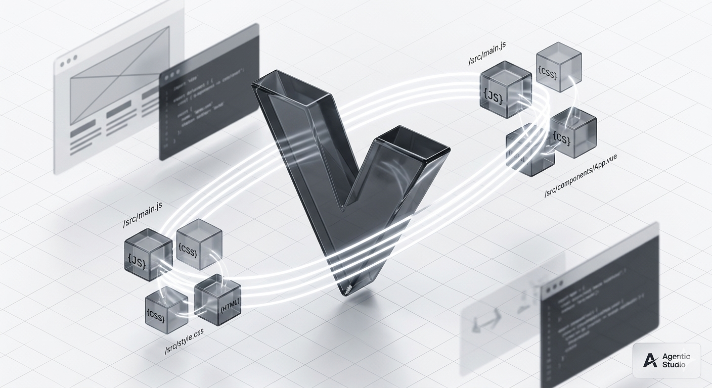

Co Vite wnosi do strony
Nie chodzi tylko o uruchomienie `npm run start`. Vite porządkuje też sposób, w jaki dokładamy kolejne kierunki, skrypty, style i większe assety.
Dev server
Podgląd na 4173
Stały adres lokalny ułatwia sprawdzanie zmian po każdej rundzie.
Assets
Obrazy i style
Nowe bitmapy z `assets/img` mogą być szybko podpinane do podstron.
Modules
Kierunek na moduły
Obecny `site.js` można później rozbić na nav, search i interakcje.